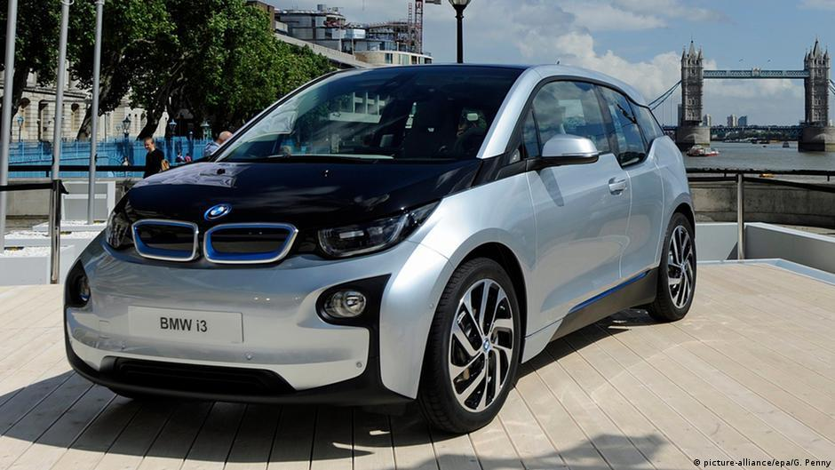

Solution For Climate Change
The earth is going through climate change and here are some solution that you can help the earth .
- Plant trees in tropical rainforests in Brazil, Indonesia, India, Colombia, and Madagascar.Protect what remains of our existing tropical forests through nonprofits such as Cool Earth.Trees absorb carbon dioxide (reminder: which makes up 82% of greenhouse gases in our atmosphere), so planting more trees can help reduce the amount of carbon in our atmosphere. In fact, we could remove roughly two-thirds of human-made carbon just by letting all forests regrow, according to a study published in the journal of Science.
- Create more sustainable transportation habits, Instead of ordering a private ride, do a rideshare. Avoid rapid acceleration and braking, and turn on cruise control on longer trips, Walk and bike to your destination whenever possible or buying a new car, choose a climate-friendly option.if you refrain from harsh braking and rapid acceleration, you can cut your fuel consumption by as much as 40%, according to the US Department of Energy. If you also keep your tires inflated and car maintained, you’ll cut your fuel consumption by nearly half when driving.
- Lower your heating bill,In the winter, take steps to lower your heating bill:Set your thermostat at 68 degrees F, and lower your home’s temperature 7-10 degrees for 8 hours a day. Shore up your windows, seal up the doors, and plug up dafty holeslowering your heating bills is the most impactful way to reduce your electricity consumption (and isn’t so bad for your wallet, either).In addition to monitoring your thermostat, improving insulation and airtightness through your walls, roof, and windows is a great way to avoid heat from escaping your home, since the biggest sources of heat loss are your walls (35%), roof (20%), and windows (15%).
- Divest from coal, and encourage others to do the same:Divest your 401k from fossil fuels which shows what % of your funds are invested in fossil fuel companies) Make sure your bank, insurance company, and university have agreed to divest. If you burn less fossil fuel the eath will actually well cool and less warth to the earth.
- Recycling you can recycle plastic bottles, glass bottle and you can recyle cans. If you do that you can have less population in the ocean and you will not have animal hurt and not endager. THe most country that recycle is Austria it captil is Vienna. What help them recycle more is Austrians are big on recycling. Large cities such as Vienna have a well-organized color-coded recycling bin system that applies to both street bins and households.


These are some of the charites you can donate: